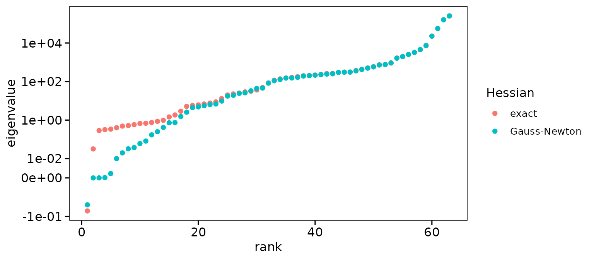

dMod2 computes derivatives of the objective exactly from the ODE
sensitivities and the chain rule through every function object. Code:
sensitivities.R; details: Methods > Sensitivities and
Hessians.
derivMode of odemodel(), Y(),
P() and Pimpl() selects the derivatives a
function object is built with: "forward",
"reverse", "forward-forward",
"forward-reverse", or "none". The arguments
deriv, deriv2 and sweep of a call
select what the call computes; a call that asks for a derivative not
built is an error.
Forward sensitivities
The default, derivMode = "forward": Xs()
integrates \(\partial x / \partial
\theta\) with the states, the objective returns gradient and
Gauss-Newton Hessian. sensErrCon in
optionsSens sets whether sensitivities enter the error test
(default TRUE).
Forward over forward
derivMode = "forward-forward" in
odemodel(), Y(), P() and
Pimpl() builds second-order sensitivities, and a call with
deriv2 = TRUE returns the exact Hessian from them. The
equation count grows with the square of the parameters (guide model:
63); it suits small models such as those of Nonlinear mixed-effects models.
Reverse sweep
One backward sweep of the adjoint system gives the gradient at a cost
independent of the parameter count (Methods > Reverse
sweep). Build with derivMode = c("forward", "reverse")
(Pimpl() passes the sweep through the Jacobian of the
root), call with sweep = "reverse". Both passes solve with
options alone; solves with sensitivities use
optionsSens merged over options. In
trust() the sweep is set per phase:
fit <- trust(obj, start,
phases = list(list(hessianMethod = "gn"),
list(hessianMethod = "sr1", sweep = "reverse")))
fit$phaseSweepWithout sweep, "bfgs" and
"sr1" phases sweep backwards if the objective allows it.
Gauss-Newton needs forward sensitivities: a "gn" phase with
sweep = "reverse" is an error. "exact" with
sweep = "reverse" and deriv2 = TRUE uses
forward over reverse.
The backward sweep follows the step grid of the value pass by
default; on the cppDE backend optionsReverse of
Xs() sets the accuracy, see
cppDE::adjointControl():
x <- Xs(model, options = list(atol = 1e-8, rtol = 1e-6),
optionsReverse = list(refine = TRUE, gradtol = 1e-3))
controls(x, name = "optionsReverse") <- list(refine = FALSE) # the grid of the value pass again| entry | controls |
|---|---|
refine |
TRUE: each sweep step passes the error test of the
solve, else is redone in substeps |
gradtol |
absolute tolerance for the share of each step in the gradient |
Under refine, value and chi2 include the
change to the refined trajectory, attribute correction (Methods
> Accuracy of a reverse gradient).
Forward over reverse
The exact Hessian without second-order sensitivities, one column per
parameter (Methods >
Forward over reverse). Build with
derivMode = c("forward", "reverse", "forward-reverse"),
call with sweep = "reverse", deriv2 = TRUE. FOCEI in Nonlinear mixed-effects models uses it for
directional second derivatives.
ODE backends
odemodel(backend = ) selects the solver:
| backend | solver | forward | fwd/fwd | reverse | fwd/rev | use |
|---|---|---|---|---|---|---|
"cppDE" (default) |
C++: BDF/NDF, Adams, Rosenbrock, Tsitouras | duals | duals | discrete adjoint | yes | all models |
"Sundials" |
CVODES, cppDE::cvode()
|
CVODES | no | CVODES ASA | no | first-order derivatives |
"deSolve" |
lsodes, cOde |
sens. equations | no | no | no | dMod models |
cppDE on stepping, CVODES and benchmarks against CVODES.
Costs on the guide model
sensitivities.R evaluates the data term of Setting up models at the best fit of Optimization; the results are loaded
from results/sensitivities.rds.
# the chain and objective of model.R once more, every function object with the reverse sweep and
# second derivatives; Pimpl() passes the reverse sweep through the Jacobian of the root
dm <- c("forward", "reverse", "forward-forward", "forward-reverse")
modelR <- odemodel(reactions, events = events, modelname = "oppelt_rev_ode",
derivMode = dm, compile = FALSE)
xR <- Xs(modelR, options = list(atol = 1e-10, rtol = 1e-8))
gR <- Y(observables, xR, modelname = "oppelt_rev_obs", compile = FALSE, derivMode = dm)
eR <- Y(errors, gR, modelname = "oppelt_rev_err", compile = FALSE, derivMode = dm)
pSSR <- Pimpl(reactions, modelname = "oppelt_rev_ss", compile = FALSE,
derivMode = "forward-forward", controlsPTC = list(stability = FALSE))
pR <- P(trafo, modelname = "oppelt_rev_par", compile = FALSE, derivMode = dm)
compile(gR, xR, pSSR, pR, eR, output = "oppelt_rev", cores = getOption("dMod2.cores"))
objR <- normL2(data, gR * xR * pSSR * pR, eR) + constraintL2(mu, sigma = sigma) +
constraintStability(pSSR, pR, width = rampWidth)
s <- readRDS("results/sensitivities.rds")Relative difference of reverse and forward gradient:
# the data term, whose gradient the prior balances at the optimum, so that it does not vanish
best <- as.parvec(readRDS("results/fits.rds"))
dataTerm <- normL2(data, gR * xR * pSSR * pR, eR)
forward <- dataTerm(best, fixed = gauge, sweep = "forward")
reverse <- dataTerm(best, fixed = gauge, sweep = "reverse")
gradients <- data.frame(forward = forward$gradient,
reverse = reverse$gradient[names(forward$gradient)])
# the largest deviation relative to the largest entry of the gradient
max(abs(gradients$forward - gradients$reverse)) / max(abs(gradients$forward))
max(abs(s$gradients$forward - s$gradients$reverse)) / max(abs(s$gradients$forward))
#> [1] 0.0003422859Seconds per evaluation, minimum of ten:
# the shortest of ten evaluations, in seconds
cost <- function(...) {
args <- c(list(best, fixed = gauge), list(...))
min(replicate(10, system.time(do.call(dataTerm, args))[["elapsed"]]))
}
timing <- c(value = cost(deriv = FALSE), forward = cost(sweep = "forward"),
reverse = cost(sweep = "reverse"),
`forward-reverse` = cost(sweep = "reverse", deriv2 = TRUE))
timing
s$timing
#> value forward reverse forward-reverse
#> 0.007 0.185 0.024 1.014Forward over reverse costs about 5.5 forward gradients; forward over forward, once:
# one evaluation of the exact Hessian forward over forward, with second-order sensitivities in all
# pairs of parameters: the time and the peak memory of the process in GB
peak <- function() as.numeric(gsub("\\D", "", grep("^VmHWM", readLines("/proc/self/status"), value = TRUE))) / 2^20
before <- peak()
forwardForward <- system.time(ff <- dataTerm(best, fixed = gauge, sweep = "forward", deriv2 = TRUE))[["elapsed"]]
memory <- c(before = before, forwardForward = peak())
c(seconds = forwardForward, memory)
c(seconds = s$forwardForward, s$memory)
#> seconds before forwardForward
#> 16.0610000 0.6090393 0.7765503It takes 16 times as long as forward over reverse and raises the peak memory of the process from 0.6 to 0.8 GB. Relative difference of the two Hessians:
exact <- dataTerm(best, fixed = gauge, sweep = "reverse", deriv2 = TRUE)$hessian
# the two exact Hessians agree up to the error of the solver
max(abs(ff$hessian[rownames(exact), colnames(exact)] - exact)) / max(abs(exact))
gaussNewton <- forward$hessian[rownames(exact), colnames(exact)]
hessians <- data.frame(exact = sort(eigen(exact, symmetric = TRUE, only.values = TRUE)$values),
gaussNewton = sort(eigen(gaussNewton, symmetric = TRUE, only.values = TRUE)$values))
max(abs(s$forwardForwardHessian[rownames(s$exact), colnames(s$exact)] - s$exact)) / max(abs(s$exact))
#> [1] 4.871075e-10Eigenvalues of exact and Gauss-Newton Hessian at the best fit:
eig <- data.frame(rank = rep(seq_len(nrow(s$hessians)), 2),
value = c(s$hessians$exact, s$hessians$gaussNewton),
Hessian = rep(c("exact", "Gauss-Newton"), each = nrow(s$hessians)))
ggplot2::ggplot(eig, ggplot2::aes(rank, value, color = Hessian)) +
ggplot2::geom_point() +
ggplot2::scale_y_continuous(trans = scales::pseudo_log_trans(sigma = 1e-3, base = 10),
breaks = c(-1e-1, 0, 1e-2, 1, 1e2, 1e4)) +
ggplot2::labs(x = "rank", y = "eigenvalue") +
theme_dMod2()
The smallest eigenvalue is -0.052 for the exact Hessian and -0.025 for Gauss-Newton.
Reference: odemodel(), Xs(),
Y(), P(), Pimpl(),
normL2(), controls(), trust()